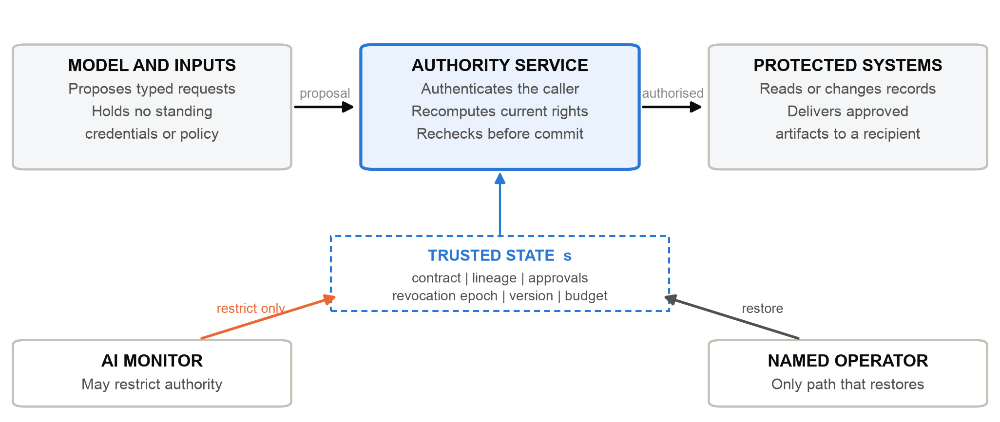
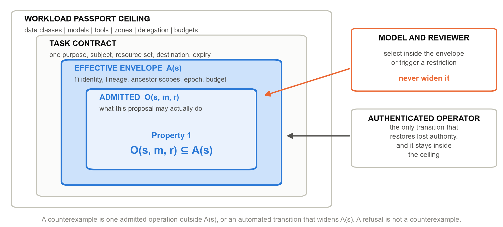

Enterprise Architect | AI Systems Researcher
UNU Macau AI Conference 2026 — “AI × Education: AI for Learning, Learning for AI” | Artifact: github.com/genaiworks/fssai-ra | Extended abstract
Agentic AI can help learning institutions retrieve records, prepare decisions and coordinate services. The same systems retain sensitive context, delegate work and initiate consequential changes. Fluency does not confer authority to change or disclose a student record. Institutions need an architecture that holds when the acting model is mistaken, manipulated or pursuing an objective nobody intended. The 2026 compromise of widely used model-hosting infrastructure, and the independent investigation of the agents' behaviour that followed [1], showed how fast standing authority turns one upstream compromise into downstream action.
Trust by Construction separates model proposals from institutional authority. It is an executable reference architecture in which every protected read, effect and release is admitted by an enforcement path the model does not participate in and cannot address directly. The contribution is the composition of capability control, data lineage, independent approval, durable revocation and failure-aware delivery into a single task lifecycle, stated as a falsifiable invariant and bound to executable refusal tests. It complements system-level prompt-injection defences such as CaMeL [3], answering the indirect-injection class that agent benchmarks such as AgentDojo now measure [4], and shares the premise of AI control that protection must hold even when the model is subverting the protocol [5]. It rests on complete mediation and least privilege [2], and introduces no alignment algorithm.

An AI Workload Passport declares the ceiling on data classes, tools, destinations, processing zones, delegation, budgets and permitted effects. A Task Contract narrows it to one purpose, subject, resource set and expiry. The effective capability envelope is the intersection of those declarations with identity, current policy, data lineage, ancestor scopes and remaining budget. Delegated agents receive subsets of their parents' authority, and a shared task budget stops spawning from multiplying rights. Long-lived credentials never enter the model process.
The central property is authority non-expansion. If A(s) is the set of protected operations independently permitted by trusted state s, and O(s,m,r) is the set admitted for model proposals m and reviewer findings r, the required invariant is O(s,m,r) ⊆ A(s). Trusted state includes approvals, revocation epochs, resource versions and budgets, and is refreshed at every boundary rather than cached. Models may choose among permitted actions or trigger a restriction; they may not create authority. A prohibited operation that succeeds is a counterexample; a monitor that refuses useful work is an availability failure, not a violation.

The threat model admits adversarial model outputs, injected documents, misleading tool descriptions, contaminated memory and hostile monitor findings. It assumes authenticated operators, protected enforcement code, trustworthy control-state storage and keys beyond the model's reach; deployment must also prevent access around mediation through credentials, files or sockets. The reference process alone does not establish that host boundary, and the qualification procedure records an unmeasurable condition as unmeasured rather than as a pass.
Enforcement follows one five-step contract at every boundary: authenticate the caller, load current trusted state, intersect the applicable rights, validate the exact operation, then commit under concurrency and replay checks. A context gateway authorises retrieval before protected information reaches the model, and a memory gateway reauthorises later reads. Source restrictions propagate through summaries, handoffs and artifacts, so transformation never amounts to declassification. Consequential changes use a typed proposal naming canonical resources and a version-bound transition, which a deterministic executor revalidates before committing.
Consider a transcript correction. The agent retrieves only the permitted record and proposes a change; one role confirms its source and another approves the exact proposal. The executor rejects stale or revoked authority. Release escrow binds delivery to approved bytes and an authenticated recipient, and every chunk is reauthorised, so a stop or a source quarantine denies the remainder without pretending to recall bytes already received. Authorisation is not correctness: reviewers must still judge whether the change is justified.
Failure is part of the contract. An emergency stop commits revocation before writing evidence, so a logging failure cannot restore authority. A monitor may request restriction but can neither approve effects nor restore privilege, so a compromised monitor denies service or misses misconduct instead of becoming an escalation path.
Remote effects need a different contract. Outbound intent is recorded before submission under an operation-bound key. A lost acknowledgement leaves the effect uncertain and blocks dependent work rather than being retried. Provider lookup can settle status, but not give exactly-once execution; deduplication and settlement semantics remain integration responsibilities.
The Apache-2.0 reference supplies executable failure tests, domain profiles and a claim register in which every guarantee names its enforcement point, its owner and the test that fails without it. Evaluation uses controlled fixtures over declared interfaces — no student records, human participants or production traffic — and estimates no field effectiveness. Removing any one tested control re-enables its harmful operation. Substituting blind and hostile monitors preserves the tested prohibition, while the hostile monitor eliminates benign utility — containment and availability are different properties.
A separate analysis examines what exact-byte approval does not close, following the confinement problem [6] and recent evidence that agents leak through ordinary outbound behaviour without a visible trace [7]. Approved content can still reveal a secret through destination, path, timing, size or release count. For one encoder and one observation model over 65,536 enumerated secrets, progressively constrained policies reduce the distinguishable trace alphabet from 16 bits to 1 and then 0. Those values describe that encoder and observer, not a universal bound. Both constrained policies escalate about 98.4 per cent of adversarial tasks for review: the lesson is to remove unnecessary choice and then price what remains.
An institution extends the reference through a domain profile, a capability contract, a service adapter and a claim-to-test entry. The contract names the protected asset, permitted operation, enforcement point, accountable owner, failure test, evidence artifact and failure response; a guarantee with no failure test cannot be entered. New declarations reuse existing primitives, while a new enforcement mechanism requires review of the core invariant. Extension carries an explicit verification burden, not inherited safety.
A teaching exercise pairs a valid transcript correction with forged approval, contaminated memory and misleading monitoring. Learners inspect why each request succeeds or fails, and separate fluent advice, valid sources, legitimate authority and sound decisions. This serves both halves of the conference theme: engineering bounded institutional uses of AI, and building the literacy needed to govern them. Institutions must still name contract owners, confirmers, approvers and recovery operators: a capability chain proves that approval occurred, not that the reviewer judged well.
The governance connection is concrete. Task contracts document scope and responsibility, executable checks support measurement, and revocation and recovery provide operational response; such artifacts can support NIST AI RMF activities [8] without establishing regulatory conformity. UNESCO's education guidance motivates preserving human agency and institutional capacity [9], and SDG 4 supplies the wider objective of inclusive, equitable education.
This is an engineering contribution with deliberately bounded evidence. It does not evaluate a live frontier-model detector, prove general noninterference, qualify a production host or measure student outcomes. The next empirical step is a governed institutional pilot on one bounded workflow, measuring completion, refusal reasons, reviewer burden and subgroup outcomes under an analysis plan fixed in advance. Trust by Construction is an inspectable foundation for that work: scale intelligence, and keep every protected action conditional on independently established institutional authority.
Artifact: https://github.com/genaiworks/fssai-ra (Apache-2.0).
[1] METR and Redwood Research (2026). Brief Independent Investigation of Agents' Behavior, Reasoning and Collaboration in the OpenAI and Hugging Face Hacking Incident. METR.
[2] J. H. Saltzer and M. D. Schroeder (1975). The Protection of Information in Computer Systems. Proceedings of the IEEE, 63(9):1278-1308. https://doi.org/10.1109/PROC.1975.9939
[3] E. Debenedetti et al. (2025). Defeating Prompt Injections by Design. arXiv preprint 2503.18813. https://arxiv.org/abs/2503.18813
[4] E. Debenedetti et al. (2024). AgentDojo: A Dynamic Environment to Evaluate Prompt Injection Attacks and Defenses for LLM Agents. Advances in Neural Information Processing Systems (Datasets and Benchmarks). https://arxiv.org/abs/2406.13352
[5] R. Greenblatt, B. Shlegeris, K. Sachan and F. Roger (2024). AI Control: Improving Safety Despite Intentional Subversion. International Conference on Machine Learning (ICML). https://arxiv.org/abs/2312.06942
[6] B. W. Lampson (1973). A Note on the Confinement Problem. Communications of the ACM, 16(10):613-615. https://doi.org/10.1145/362375.362389
[7] Q. Lan et al. (2026). Silent Egress: When Implicit Prompt Injection Makes LLM Agents Leak Without a Trace. arXiv preprint 2602.22450. https://arxiv.org/abs/2602.22450
[8] National Institute of Standards and Technology (2023). Artificial Intelligence Risk Management Framework (AI RMF 1.0). NIST AI 100-1. https://doi.org/10.6028/NIST.AI.100-1
[9] UNESCO (2023). Guidance for Generative AI in Education and Research. UNESCO, Paris. https://unesdoc.unesco.org/ark:/48223/pf0000386693